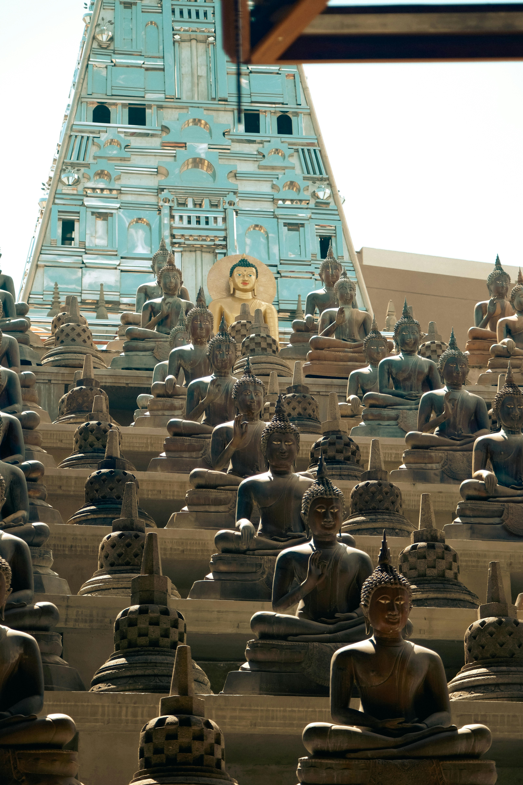

Colombo's most iconic Buddhist temple, a blend of traditional architecture and a treasure trove of global artifacts.
Founded over a century ago, Gangaramaya is much more than a place of worship. It serves as a center of learning and a museum housing thousands of items from across the Buddhist world, including ivory carvings, ancient scripts, and golden statues.
The temple's architecture is a fascinating mix of Sri Lankan, Thai, Indian, and Chinese styles. Adjacent to the main temple is the Seema Malaka shrine, designed by the world-renowned architect Geoffrey Bawa, which sits beautifully upon the waters of Beira Lake.
Back to Colombo Hub